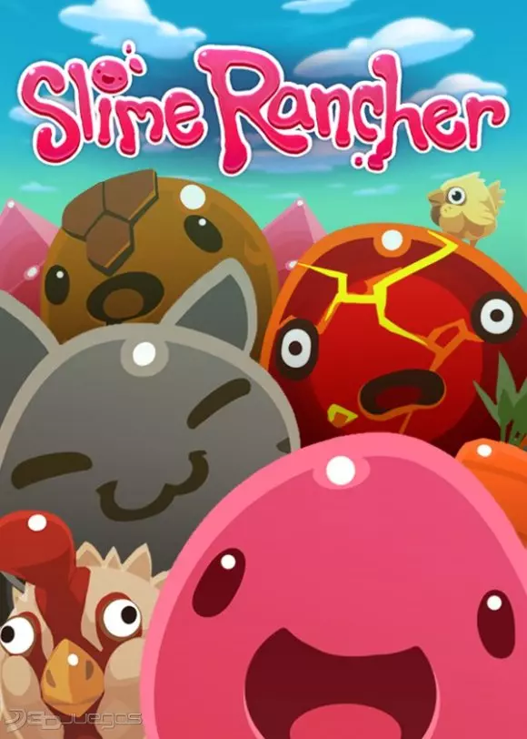

Slime Rancher

Slime Rancher es la historia de Beatrix LeBeau, una intrépida y joven ranchera que se prepara para una vida a mil años luz de la Tierra en la ‘Lejana, Lejana Pradera’ donde prueba su suerte para ganarse la vida lidiando con slimes.
Precio: ARS$ 1.418,00